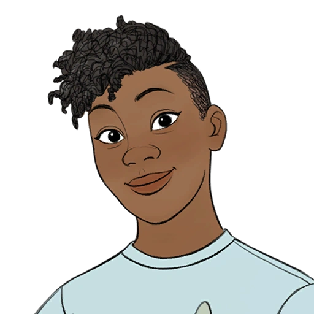

Coral Island é um jogo de simulação de fazenda tradicional e de mundo aberto situado em uma ilha tropical. Os jogadores podem cuidar de suas fazendas
cultivar plantações, cuidar de animais, pescar, colher alimentos, explorar cavernas, cozinhar e fazer amizade com os habitantes locais.
O mundo
Em Stardew Valley, o mundo se desdobra em uma tapeçaria de paisagens distintas, cada uma com sua própria essência e encantos. Entre elas, destacam-se a Vila Pelicanos, o Deserto e a Ilha Gengibre, destinos que convidam os jogadores a explorarem e descobrirem seus segredos.
Coral Island
Bem-vindo a Coral Island, um paraíso tropical cheio de aventuras! Explore praias de areias brancas, mergulhe em águas cristalinas, e descubra recifes de coral coloridos. Conheça a comunidade local e sua vida na ilha. Cultive culturas tropicais, crie animais e pesque peixes exóticos. Não perca festivais e eventos comunitários. Relaxe em praias isoladas e desfrute da serenidade. Em Coral Island, cada dia traz novas descobertas em uma ilha cheia de vida e beleza natural. Junte-se a nós nesta jornada de aventura e conservação!
Moradores(casáveis) de coral Island
Nome
Imagem
Presentes amados
Presentes odiados
Aaliyah

Morango
Quartzo
O Deserto
O Deserto Calico está localizado muito ao noroeste da Vila Pelicanos. Não é acessível até que o ônibus no Ponto de Ônibus tenha sido reparado completando os Conjuntos do cofre no Centro Comunitário ou comprando o Reparo do Ônibus por 40 000 ouros do Formulário de Melhorias Comunitárias Joja. Uma vez reparado, Pam retornará ao trabalho como a motorista do ônibus. Um bilhete para transportar o ônibus para o deserto custa 500 ouros cada vez, embora a viagem de volta seja gratuita. Os bilhetes só podem ser comprados quando Pam estiver presente no ônibus (10:10 - 17:00).
Moradores do Deserto
Nome
Imagem
Presentes amados
Presentes odiados
Sandy
Narciso
Azevinho
Segurança
sr. QI
Ilha Gengibre
Ilha Gengibre é uma ilha no arquipélago das Ilhas Samambaia que pode ser acessada após consertar o barco do Willy que tem nos fundos da Peixaria e comprar a passagem, que por sua vez é acessado após completar o Centro Comunitário ou o Formulário de Melhorias Comunitárias Joja. A Ilha Gengibre é a única ilha disponível para se visitar no arquipélago, embora outras ilhas possam ser vistas de barco no caminho para lá.